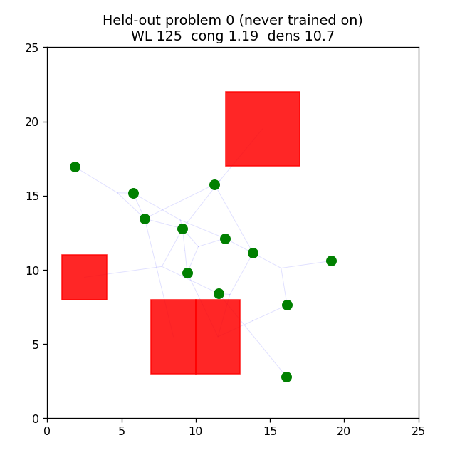
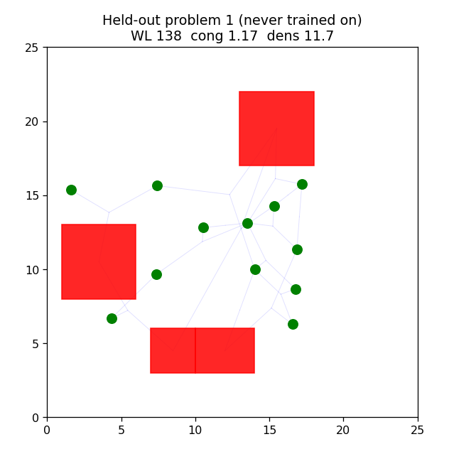

Completing the architectural ladder: the GNN (Graph Neural Network) latent is upsampled into a 25 by 25 grid of placement logits by a spatial decoder (the paper's deconvolution action head), so the policy reasons spatially instead of through a plain layer.
V4 produced the 625 grid-cell logits with a plain linear layer, which translates graph structure into spatial placement poorly. V5 replaces it with a spatial decoder: the policy latent seeds a small feature map, which is upsampled to canvas resolution and passed through convolutions to produce one logit per cell. This is a custom Stable-Baselines3 policy (the action head, not just the feature extractor, is replaced), and it runs on the GPU (Graphics Processing Unit).
| Policy | Held-out improvement over random |
|---|---|
| V3 flat MLP (Multi-Layer Perceptron) | ~3% |
| V4 GNN | ~0.9% |
| V5 GNN + deconvolution | ~1.1% |


The full architectural ladder (flat observation to GNN to GNN plus deconvolution action head) is implemented and integrated correctly, including custom Stable-Baselines3 policy surgery and GPU training. Measured honestly, none of it beats a simple baseline at this scale, and the write-up correctly identifies why. That honest diagnosis, distinguishing an architecture problem from a scale-and-headroom problem, is a more accurate understanding of the method than an uncritical "we reproduced it" claim.
See the repository README and RESULTS.md for the full arc.